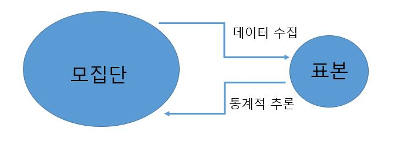

1.2 모집단에서 표본 추출
이 교재는 데이터를 분석하는 방법을 주로 다룰 것이지만 데이터를 어떻게 수집하느냐도 매우 중요하다. 데이터 수집이 잘 되었을 때는 예리한 통찰력이나 유용한 발견을 할 수 있지만, 데이터 수집이 잘못되면 엉뚱한 결과를 주기 때문이다.
데이터 수집의 잘잘못을 가릴 수 있는 능력은 데이터에 기반한 주장을 만들거나 이해할 때 대단히 중요하다. 이 장의 나머지 부분은 데이터를 수집할 때 고려해야 할 몇 가지 중요한 주제를 설명한다.
모집단과 표본
앞 절에서 전 세계의 국가를 대상으로 조사한 AllCountries 데이터를 소개하였다. 각 국가에 관한 데이터는 전체 국민을 대상으로 조사한 결과이다. 관심의 대상인 모든 개인 또는 개체의 집합을 모집단(population)이라고 한다. 모집단 전체를 조사하는 것은 센서스(census)라고 한다.
모집단에 속한 개체를 일일이 모두 조사하는 것이 일반적으로 가능하지 않다. 공중 화장실을 이용한 후에 몇 퍼센트나 손을 씻는지 추정하고 싶을 때, 모든 사람을 조사하는 것은 가능하지 않다. 암 치료를 위한 신약의 효과를 모든 환자를 대상으로 실험할 수 없다. 새로운 광고에 사람들이 얼마나 반응하는 지를 알기 위하여 모든 사람에게 광고를 보여주고 반응을 측정할 수 없다. 많은 경우에 우리가 할 수 있는 것은 아주 큰 모집단에서 일부 표본을 뽑아서 모집단에 대한 정보를 얻는 것이다.
예제 1.10. 미국인 중에서 몇 퍼센트의 사람이 공중 화장실을 이용한 후에 손을 씻는지 추정하기 위하여, 연구자는 화장실에서 머리를 빗는 척하면서 \(6000\)명을 관찰했다. 화장실을 사용한 후에 손을 씻고 나간 사람의 비율은 \(85\%\)이었다. 이 연구에서 표본은 무엇인가? 모집단은 어떻게 정의하는게 합리적인가?
풀이 (클릭하면 풀이가 보입니다)
표본은 공중 화장실에서 연구자가 관찰한 사람 \(6000\)명이다. 모집단은 미국에 사는 모든 사람이다. 모집단에 대한 다른 정의는 공중 화장실을 이용하는 모든 미국인 또는 연구가 실시된 도시에 살면서 공중 화장실을 이용하는 미국인이다.
또한 생각해볼 다른 문제는 공중 화장실에 혼자 있을 때의 행동과 다른 사람과 같이 있을 때의 행동이 다를 수도 있다는 점이다. 이것이 맞다면 모집단을 공중 화장실에 누군가와 같이 있을 때의 사람으로 제한해야 한다.
관습적으로 표본 크기는 문자 \(n\)으로 표기한다. 위 예제에서 \(n = 6000\) 이다. 표본 크기는 모집단의 크기보다 매우 작은 경우가 많다.
보통은 모집단 전체에 대한 데이터가 존재하지 않는다. 그러므로 표본이 가지고 있는 정보를 활용하여 모집단에 대하여 신뢰할 수 있는 주장을 어떻게 할 수 있느냐가 중요하다. 이것을 통계적 추론(statistical inference)이라고 부른다.
이 교재에서 다루는 여러가지 데이터 분석은 통계적 추론에 관한 것이다. 하지만 모집단에서 표본을 어떻게 얻었느냐에 따라 통계적 추론의 유효성도 달라질 수 있으므로 표본 추출의 중요성을 무시하면 안된다.

확인문제 1. “모집단(population)”의 정의로 가장 적절한 것은?
1 연구자가 관심을 가지는 전체 대상 집단
2 연구에서 조사한 표본 데이터
3 통계적 분석을 위한 수학적 모델
4 실험에 참여한 피험자의 수
확인문제 2. 공중 화장실을 이용한 후 손을 씻는 사람들의 비율을 조사하기 위해 연구자가 \(6000\)명을 관찰했다. 이 연구에서 표본(sample)은 무엇인가?
1 미국에 거주하는 모든 사람
2 연구자가 관찰한 \(6000\)명
3 미국에서 공중 화장실을 이용하는 모든 사람
4 연구자가 관심을 가진 전체 모집단
확인문제 3. 표본 추출이 중요한 이유로 가장 적절한 것은?
1 모집단 전체를 조사할 수 없기 때문에 일부를 조사하여 모집단에 대한 추론을 하기 위해
2 연구 비용을 줄이고 빠르게 결론을 도출하기 위해
3 연구 결과를 연구자의 가설에 맞추기 위해
4 표본을 활용하면 모집단을 완벽하게 파악할 수 있기 때문에
표집 편향(sampling bias)
예제 1.11. \(1948\) 년 미국 대통령 선거 다음 날, 시카고 트리뷴 신문의 헤드라인은 “듀이가 트루먼을 이겼다”이다. 하지만 트루먼이 듀이를 이기고 \(33\)번째 미국 대통령이 되었다. 이 신문은 모든 투표 결과가 나오기 전에 인쇄되었고 헤드라인은 전화로 조사한 여론 조사의 결과이었다.
(1) 표본과 모집단은 각각 무엇인가?
(2) 표본을 가지고 모집단의 무엇을 추정하길 원했는가?
(3) 당신은 여론조사 결과가 왜 잘못 나왔다고 생각하는가?
풀이 (클릭하면 풀이가 보입니다)
(1) 표본은 여론조사에 참여한 모든 사람이다. 모집단은 대통령 선거에서 투표한 모든 미국인이다.
(2) 여론조사를 통하여 각 후보가 얻은 표의 비율을 추정하길 원했다.
(3) 전화 여론조사가 실패한 한가지 이유는 \(1948\)년에 전화를 가진 사람이 전체 미국 투표자를 대표하지 못했기 때문이다. 전화를 가진 사람은 부유한 경우가 많았고 이들은 듀이를 선호하는 경향이 있었다. 반면에 전화가 없는 사람은 트루먼을 선호하는 경향이 있었다.
위 예제는 전화를 가지고 있는 사람만 표본으로 추출하여 표본이 한 쪽으로 치우친 표집 편향(sampling bias)을 설명한다.
표집 편향은 표본을 추출하는 방식이 모집단과 다르게 표본을 어느 한 쪽으로 치우치게 만들 때 발생한다. 표집 편향이 발생하면 표본에서 얻은 결과를 모집단으로 일반화 할 때 신뢰할 수 없게 된다.
예제 1.12. 비행기 여행을 마친 후에 탑승객이 항공사로부터 만족도를 조사하는 이메일을 받았다. 항공사는 이메일 응답으로 얻은 데이터를 분석한다.
(1) 표본은 무엇이고 항공사가 관심을 가지는 모집단은 무엇인가?
(2) 당신은 이 조사 결과가 고객 만족도를 올바르게 반영할 것이라고 생각하는가?
풀이 (클릭하면 풀이가 보입니다)
(1) 표본은 이메일 조사에 응답한 사람이다. 모집단은 이 비행기를 이용한 모든 고객이다.
(2) 조사 결과는 고객의 만족도를 정확히 반영하지 못할 것이다. 비행기를 이용했을 때 특별한 경험이 없다면 조사에 응하지 않을 것이지만 특별히 좋거나 나쁜 경험이 있다면 조사에 더 많이 응답할 것이기 때문이다.
비행기 만족도 조사처럼 자원자(volunteer)로 구성된 여론조사에서는 표집 편향이 종종 발생한다. 표본에 참여하는 자원자는 모집단과 달리 극단적인 의견을 가진 경우가 많기 때문이다.
표집 편향을 피하기 위하여 모집단을 대표하는 표본을 얻을 수 있도록 노력해야 한다. 대표 표본(representative sample)은 표본의 크기가 작더라도 모집단과 유사하다. \(1948\)년 전화 조사는 전화를 보유할만큼 부유한 사람들만 조사하여 표본이 모집단보다 부유한 쪽으로 치우쳐 대표 표본이 아니었다. 표본이 모집단을 대표할수록, 표본을 사용한 모집단 추론이 좀더 가치 있어진다.
예제 1.13. 어느 피트니스 관련 웹사이트가 “개인 트레이너를 고용한 적이 있는가”를 조사하였다. 웹사이트 방문자는 “예/아니오”를 선택한다. 응답자의 \(27\%\)가 예라고 답하였다. \(27\%\)의 사람이 개인 트레이너를 고용한 적이 있다고 일반화 할 수 있을까?
풀이 (클릭하면 풀이가 보입니다)
없다. 이 웹사이트를 방문하여 조사에 응한 사람이 개인 트레이너를 고용했던 일반인보다 더 많을 것이다. 따라서 이 표본은 모든 사람을 대표하는 표본이 아니므로 표본 결과를 가지고 모든 사람에게 일반화 할 수 없다.
확인문제 1. \(1948\)년 미국 대통령 선거에서 시카고 트리뷴 신문이 “듀이가 트루먼을 이겼다”라는 잘못된 헤드라인을 낸 주요 원인은 무엇인가?
1 모든 투표 결과가 발표되기 전에 신문을 인쇄했기 때문이다.
2 여론조사가 전화를 소유한 사람들만 대상으로 했기 때문이다.
3 선거 당일 기상 조건이 투표율에 영향을 미쳤기 때문이다.
4 듀이의 선거 캠페인이 트루먼보다 더 강력했기 때문이다.
확인문제 2. 비행기 만족도 조사가 표집 편향(sampling bias) 문제를 가질 가능성이 높은 이유는?
1 설문이 모든 승객에게 전송되지 않기 때문이다.
2 응답자는 만족도가 극단적으로 높거나 낮은 경우가 많기 때문이다.
3 응답자가 조사에 응할지 여부를 무작위로 결정하기 때문이다.
4 비행기 회사가 설문 결과를 조작할 가능성이 있기 때문이다.
확인문제 3. 다음 중 표집 편향(sampling bias)이 발생할 가능성이 가장 높은 사례는?
1 미국 성인 \(1,000\)명을 무작위로 표본 추출하여 건강 상태를 조사함.
2 한 대학교 학생 중 \(500\)명을 무작위로 선택하여 기숙사 만족도를 조사함.
3 피트니스 웹사이트에서 방문자에게 “개인 트레이너를 고용한 적이 있는가?”를 설문함.
4 모든 국가의 국민을 대표하도록 국가별 인구 비율에 맞춰 표본을 선정함.
단순 무작위 표본(simple random sample)
모집단에 대한 추론이 타당하려면 대표 표본이 필수적이다. 그러면 어떻게 표본을 뽑아야 하는가? 무작위 추출이 답이다. 예를 들면, 모집단에 속한 모든 케이스의 이름을 종이 쪽지에 적어서 모자 안에 넣은 다음 잘 섞은 후 종이 쪽지를 꺼내면 무작위 표본이 된다.
모집단에서 크기 \(n\)의 모든 그룹이 표본이 될 가능성이 같을 때 이를 단순 무작위 표본(simple random sample)이라고 말한다. 결과적으로 모집단의 모든 원소가 뽑힐 가능성이 같다. 단순 무작위 표본으로 표집 편향을 피할 수 있다.
다양한 분야에서 통계학을 사용하는 이유 중의 일부는 다음과 같은 놀라운 사실에 기초한다. “단순 무작위 표본은 모집단을 잘 대표하는 표본인 경우가 많다.” 우리나라의 인구는 \(5\)천만이 넘고, 미국의 인구는 \(3\)억명이 넘는다. 센서스는 전체 인구를 조사하지만, 몇몇 흥미 있는 질문은 표본 크기가 \(1,000\)개 정도이면 충분하다. 이렇게 작은 표본으로 \(3\)억명의 모집단에 대하여 효과적인 추론을 할 수 있다는게 놀랍지 않은가!
예제 1.14. \(2008\) 년 미국의 대통령 선거 직전에 갤럽은 무작위로 \(2,847\)명의 표본을 뽑았다. 그들 중에서 \(52\%\)는 오바마를 지지했고, \(42\%\)는 맥케인을 지지했다. 이 결과를 선거에서 각 후보의 지지율을 추정하기 위하여 \(1\)억3천만 명의 전체 유권자로 일반화 할 수 있을까?
풀이 (클릭하면 풀이가 보입니다)
일반화 할 수 있다. 투표자를 무작위로 뽑았기 때문에 표본 결과를 모집단으로 일반화 할 수 있다. 실제 선거에서 \(53\%\)는 오바마에게 투표했고, \(46\%\)는 맥케인에게 투표하였다. 물론 표본 데이터가 모집단 데이터와 완전히 일치하지는 않는다(3장에서 표본 결과가 모집단 결과와 얼마나 비슷할까에 관하여 배울 것이다). 극히 일부의 표본만으로 상당히 정확한 추측을 얻을 수 있다는 사실이 놀라운 것이다.
수프가 어떤 맛인지 알기 위하여 수프 한 그릇을 전부 먹을 필요가 있을까? 수프를 충분히 잘 저었다면 한 수푼 맛보는 것으로 충분하다. 이것이 표본 추출의 기본 아이디어이다. 수프 냄비(모집단)에서 조금만 떠서(표본 추출) 맛을 보아도 전체에 대한 것을 알 수 있다. 하지만 수프가 잘 섞여져 있지 않다면(소금을 넣은 후 잘 섞지 않는다면) 조금 맛 보는 것으로 전체를 알 수는 없다. 수프를 잘 섞어 표본을 무작위로 만들면 우리가 맛보는 작은 표본이 전체 수프를 대표한다.
확인문제 1. 단순 무작위 표본(Simple Random Sample)의 정의로 가장 적절한 것은?
1 연구자가 임의로 선택한 모집단의 일부
2 모집단에서 크기 \(n\)의 모든 그룹이 같은 확률로 선택되는 표본
3 모집단 내에서 특정 기준에 따라 선택된 표본
4 연구자가 실험에 적합한 특성을 가진 대상을 선별하여 구성한 표본
확인문제 2. 단순 무작위 표본을 사용하는 이유로 가장 적절한 것은?
1 표본을 쉽게 모집하기 위해
2 연구자의 의도를 반영한 데이터를 얻기 위해
3 모집단을 대표하는 공정한 표본을 얻기 위해
4 실험 비용을 최소화하기 위해
확인문제 3. \(2008\)년 미국 대선 직전 갤럽이 무작위로 \(2,847\)명을 조사한 결과, \(52\%\)가 오바마를 지지한다고 응답했다. 이 표본을 전체 유권자(\(1\)억 \(3\)천만 명)로 일반화할 수 있는 주요 이유는 무엇인가?
1 표본의 크기가 충분히 커서 모집단을 대표할 가능성이 높기 때문이다.
2 조사 대상이 선거에서 반드시 투표할 사람이었기 때문이다.
3 표본의 지지율이 모집단의 실제 지지율과 항상 일치하기 때문이다.
4 여론조사가 후보의 실제 득표율을 정확히 예측할 수 있기 때문이다.
무작위 표본을 만들 능력이 있는가?
동전 던지기(coin tossing) 실험은 공중에 동전을 던져서 동전의 어느 면이 나타나는 지를 관찰하는 실험이다. 대부분 축구 경기에서 어느 팀이 먼저 공격할 지를 결정할 때 사용한다. 동전 던지기의 결과는 초기 조건이 결정한다. 초기 조건을 정확히 제어한다면 원하는 결과를 만들어 낼 수 있다. 이런 능력을 가진 사람을 본 적이 있는가?
동전 던지기를 \(200\)번 반복하여 무작위 표본을 뽑는다고 생각하자. 이 실험으로 데이터를 얻으려면 대략 \(20\)분이 넘게 걸린다. 굳이 번거롭게 실험을 하지 않고 생각만으로 무작위 표본을 만들 수 있을까? 많은 사람들이 자신은 그런 능력이 있다고 생각한다. 실제 무작위 표본을 만들 수 있는 능력이 있는지 알아보자.
- 동전 던지기 실험을 실제로 \(200\)번 한 것처럼 데이터를 만든다.
- 무작위로 만들어진 표본이라고 할 수 있는지 테스트 한다.
- 모의실험을 통하여 무작위 표본의 특성을 알아본다.
이런 시도를 \(10\)번 한다면 무작위 테스트에 몇 번 정도 통과할 자신이 있습니까?
1 \(9\)번 이상 😆
2 \(5\)번 정도 🙂
3 \(1\)번 이하 😟
같은 값이 연속해서 \(n\)번 나왔을 때 이것을 길이가 \(n\)인 런(run)이라고 한다.
데이터가 위와 같다면 런은 총 \(4\)개 이고 각 런의 길이는 \(2\), \(1\), \(3\), \(4\)이다. 런의 길이와 빈도를 분석하여 무작위 표본인지 아닌 지를 어떻게 판단하는지 알아보자.
모의실험x1을 눌러 런의 최대 길이와 길이가 \(6\) 이상인 런의 개수를 구한다. 또한 런의 길이 별 빈도와 기대 빈도(무작위인 경우)를 나란히 막대 그래프로 그린다. \(200\)번 동전 던지기 데이터를 무작위로 만들 때 이론적으로 길이가 \(6\) 이상인 런은 \(3\)개 기대할 수 있다. 최대 런의 길이가 \(5\) 이하라면 무작위로 만들어진 데이터가 아니라고 의심하는 것은 합리적일까? 모의실험으로 알아보자.
모의실험은 실제 실험을 컴퓨터로 흉내내는 것이다. 모의실험을 한 번 할 때마다 런의 최대 길이를 구한다. 이 값들을 모아 막대 그래프를 그리고 런의 최대 길이가 \(5\) 이하인 경우가 몇 퍼센트인지 계산한다. \(100\)번 이상 모의실험을 반복하면 이 비율이 약 \(5\%\)임을 알 수 있다. 무작위 표본이라도 런의 최대 길이는 \(5\) 이하 나올 수 있지만 그 비율은 \(5\%\) 정도 밖에 되지 않는다. 이와 관련된 주제는 뒤에서 다시 자세히 다룰 것이다.
마음속으로 동전 던지기 데이터를 만들 때 길이가 \(6\) 이상인 데이터를 만들지 않는 이유는 무엇일까? 런의 길이가 \(6\) 이상인 데이터는 발생할 확률이 매우 적다고 생각하기 때문이다. 하지만 발생하기 어려운 사건도 반복을 많이 할수록 일어날 가능성이 높아진다.
문제 1.1. 동전 던지기 실험을 통하여 무작위 표본에 대하여 배운 것은 무엇입니까? 어떤 점이 흥미롭고 어떤 점이 어렵게 느껴집니까? 소감을 \(300\)자 이상 쓰시오.
확인문제 1. “무작위(random)” 표본을 만들 때 주의해야 할 점으로 가장 적절한 것은?
1 데이터의 특정 패턴을 피하기 위해 일부러 규칙을 만든다.
2 짧은 반복보다는 긴 반복이 더 자연스럽게 보이도록 조작한다.
3 인간의 직관이 아니라 수학적 방법을 이용해야 한다.
4 동일한 값이 연속해서 나오지 않도록 한다.
확인문제 2. 동전 던지기 결과에서 “런(run)”이 의미하는 것은 무엇인가?
1 동전 던지기의 전체 횟수
2 앞면과 뒷면이 동일한 빈도로 나타나는 것
3 특정한 패턴이 반복되지 않는 것
4 같은 면(앞면 또는 뒷면)이 연속해서 나타난 구간
확인문제 3. 컴퓨터 모의실험(simulation)이 무작위성을 검증하는 데 유용한 이유는 무엇인가?
1 실험을 반복할 필요 없이 한 번의 실행으로 무작위성을 확인할 수 있기 때문이다.
2 사람이 만든 무작위 데이터와 실제 무작위 데이터를 비교할 수 있기 때문이다.
3 실제 동전 던지기보다 더 정확한 결과를 제공하기 때문이다.
4 무작위 데이터의 통계적 특성을 분석하여 인간이 만든 데이터와 비교할 수 있기 때문이다.
앞에서 동전 던지기를 실제로 하지 않고 마음 속으로 만들어낸 데이터는 무작위 테스트를 통과하기 어렵다는 것을 알았다. 그러면 모집단 전체를 눈으로 보고 표본을 뽑으면 모집단을 대표하는 표본을 뽑을 수 있을까? 다음 실험으로 알아보자.
예제 1.15. 아래 그림에 원이 \(100\)개 있다. 원 \(100\)개의 평균 면적을 표본 \(5\)개를 뽑아 표본 평균으로 추정하려고 한다. 다음 질문에 답한 후에 표본 \(5\)개의 평균 면적이 모집단의 평균 면적과 최대한 가깝도록 \(5\)개를 신중하게 선택하라. 원을 클릭하면 표본으로 뽑힌다.
모집단 평균은 \(1\)~\(12\) 사이에 있다. 당신이 뽑은 \(5\)개의 표본 평균과 모집단 평균의 차이는 어느 정도일 것이라고 예측합니까?
1 \(1\) 이하
2 \(1\)~\(2\)
3 \(2\)~\(3\)
4 \(3\) 이상
문제 1.2. \(100\) 개 원의 평균 면적은 \(3.82\)이다. 모집단 전체를 눈으로 보고 모집단을 대표할 만한 표본을 \(5\)개 뽑았다. 자신이 뽑은 표본의 평균은 모집단의 평균 \(3.82\)와 얼마나 가까운가?
모든 학생들이 뽑은 표본 평균의 히스토그램이 위에 있다. 모집단 평균과 학생들의 표본 평균값 들을 비교한 결과는 다음 중 무엇인가?
1 표본 평균 값들이 모집단 평균 좌우에 거의 대칭적으로 나뉘어져 있다.
2 표본 평균 값들이 모집단 평균 보다 작은 쪽에 더 많이 몰려 있다.
3 표본 평균 값들이 모집단 평균 보다 큰 쪽에 더 많이 몰려 있다.
편의표본 (convenience sample)
통계학에서 무작위 표본은 ‘되는대로’, ‘마구잡이로’, ‘마음대로’ 표본을 뽑은 것이 절대 아니다. 로또 복권을 추첨하는 것과 같은 기계 또는 컴퓨터를 이용해야 무작위 표본을 뽑을 수 있다(인터넷에서 ‘로또 추첨’ 동영상 참조). 로또 복권에서 당첨번호 추첨은 완전히 무작위로 보인다. 당첨번호를 예측하는 방법이 있을까?
무작위 표본이 이상적이기는 하지만 다음과 같은 이유로 현실에서 가능하지 않을 수 있다.
- 전체 모집단의 목록이 존재하지 않는다.
- 목록은 있지만 모집단의 어떤 구성원은 조사가 불가능하다.
- 시간과 비용이 너무 많이 든다.
무작위 표본 대신에 쉽게 얻을 수 있는 표본을 사용하기도 한다. 이러한 표본을 편의표본(convenience sample)이라고 한다. 편의표본으로 모집단을 추론할 때 편향이 발생하기 쉬우므로 매우 조심해야 한다.
예제 1.16. 시카고 트리뷴 신문은 \(1948\)년 미국 대통령 선거 결과를 좀더 정확하게 예측하기 위하여 무엇을 해야만 했나? 하지만 신문이 이것을 하지 못했던 이유는 무엇이라고 생각하는가?
풀이 (클릭하면 풀이가 보입니다)
\(1948\)년 대통령 선거 결과를 좀더 정확하게 예측하기 위해서는 투표했던 모든 유권자 집단에서 무작위 표본을 뽑아 누구에게 투표했는 지를 물었어야 했다. 하지만 무작위 표본을 뽑지 못했던 이유로 다음 두 가지를 생각할 수 있다.
- 무작위 표본을 뽑고 싶었으나 투표했던 모든 유권자의 목록이 없었다.
- 무작위 표본을 조사하려면 미국 전역을 돌아다녀야 하는데 시간과 비용이 너무 많이 든다.
전화를 가진 사람만을 조사했던 이유는 비용이 적게 들고 편리했기 때문일 것이다.
예제 1.17. 미국에서 채식주의자는 몇 퍼센트일까? 이를 조사하려면 전체 미국인으로부터 무작위 표본을 뽑아야 하는데 이는 극히 어렵거나 불가능한 일이다. 추정을 정확하게 하려면 모집단과 질문을 어떻게 바꾸어야 하나?
풀이 (클릭하면 풀이가 보입니다)
한 가지 방법은 미국 전체가 아니고 보스톤과 같이 어느 한 지역으로 축소하여 채식주의자 비율을 조사하는 것이다. 보스톤의 유선 전화번호부에서 무작위 표본을 뽑아 전화를 걸어 채식주의자인지 물어본다. 이러한 경우에 모집단은 유선 전화를 가진 보스톤 시민이다. 유선 전화 없이 무선 전화만을 사용하는 사람은 모집단에 포함되지 않는다는 것에 유의해야 한다.
확인문제 1. 편의표본(convenience sample)의 주요 문제점은 무엇인가?
1 모집단을 무작위로 대표하지 못할 가능성이 크다.
2 데이터를 수집하는 데 시간이 너무 오래 걸린다.
3 모든 모집단의 개체가 조사에 포함될 가능성이 높다.
4 연구자가 원하는 결과를 쉽게 얻을 수 있다.
확인문제 2. \(1948\)년 미국 대통령 선거에서 시카고 트리뷴 신문이 여론조사를 잘못 수행한 이유로 가장 적절한 것은?
1 무작위 표본이 아니라 전화를 가진 사람들만 조사했기 때문이다.
2 투표 당일 날씨가 나빴기 때문이다.
3 표본의 크기가 너무 작았기 때문이다.
4 트루먼 후보의 선거 캠페인이 예상보다 효과적이었기 때문이다.
확인문제 3. 미국에서 채식주의자의 비율을 조사하려 할 때, 편의표본을 사용하면 생길 수 있는 대표적인 문제는?
1 조사 대상이 미국 전체를 대표하지 못할 수 있다.
2 채식주의자가 아닌 사람들이 설문을 거부할 가능성이 높다.
3 조사 과정에서 응답자의 건강 상태를 정확하게 측정할 수 없다.
4 채식주의자의 비율이 지역별로 동일하다고 가정해야 한다.
표집 편향이 발생하는 다른 요인
데이터를 수집하는 방법이 잘못되어 표본이 모집단을 대표하지 못할 때 편향(bias)이 발생한다. 표집 편향 말고 다른 편향이 데이터를 수집할 때 발생할 수 있다. 특히 사람을 대상으로 데이터를 조사할 때 무작위 표본이더라도 결과를 왜곡시키는 편향이 존재하기도 한다.
표본으로 뽑힌 사람이 조사에 참여하지 않을 때 편향이 발생할 수 있다. 질문에 응답하는 사람과 거절하는 사람이 다르게 답한다면 결과는 편향되기 마련이다.
예제 1.18. \(1997\) 년 영국의 도시 소머셋(Somerset)에서 건강과 관련된 생활습관을 조사한 연구가 있었다. 소머셋에 거주하는 \(6009\)명의 무작위 표본을 뽑아 설문지를 우편으로 보냈다. 그들중 \(57.6\%\)가 응답한 설문지를 반송하였다. 운동, 흡연 등 건강과 관련된 데이터가 제대로 조사되었다고 생각하는가?
풀이 (클릭하면 풀이가 보입니다)
제대로 조사되지 않았을 것이다. 설문에 응답한 사람들은 평소에 건강에 관심을 갖고 좀더 건강한 생활습관을 가진 사람들일 수도 있다.
연구자는 응답하지 않았던 사람들 중에서 무작위 표본을 뽑아 전화로 조사하였다. 기대했던대로 무응답자의 건강과 관련된 생활습관은 응답자와 많이 달랐다. 보통 이상의 격렬한 운동을 하지 않고 있다는 비율이 응답자 그룹에서는 \(35.9\%\)이지만 무응답자 그룹에서는 \(2\)배인 \(69.6\%\)로 나왔다.
질문을 어떻게 표현하느냐에 따라 편향이 발생하기도 한다. \(1941\)년 한 연구자가 사람들에게 같은 질문을 두 가지 다른 방식으로 물었다. “미국은 민주주의에 반하는 대중 연설을 허락해야 하는가”라는 질문에 \(21\%\)는 허락해야 한다고 답했다. 반면에 “미국은 민주주의에 반하는 대중 연설을 금지해야 하는가”라는 질문에 \(39\%\)는 금지되지 않아야 한다고 답했다. 설문 표현을 조금 바꾸었을 뿐인데 비율은 거의 두 배 차이가 났다.
확인문제 1. 무응답 편향(nonresponse bias)이 발생하는 주요 원인은 무엇인가?
1 조사 대상자가 많아질수록 무작위성이 증가하기 때문이다.
2 응답자와 응답하지 않은 사람이 다르게 답할 가능성이 높기 때문이다.
3 무작위 표본이 아닌 편의표본을 사용했기 때문이다.
4 모집단 전체를 조사하지 않았기 때문이다.
확인문제 2. \(1997\)년 영국 소머셋에서 진행된 건강 관련 설문조사에서 응답률이 \(57.6\%\)였다. 이 조사에서 나타날 수 있는 주요 문제는?
1 설문에 응답한 사람들이 건강에 더 관심이 있는 사람들이라서 결과가 편향될 수 있다.
2 설문조사의 표본 크기가 너무 크기 때문이다.
3 연구자가 사전에 조사 대상자들을 선별했기 때문이다.
4 조사에 참여한 사람들만의 생활습관이 대표성을 가지기 때문이다.
확인문제 3. 설문 조사에서 질문의 표현 방식이 결과에 영향을 미칠 수 있는 이유로 가장 적절한 것은?
1 응답자들이 어려운 질문을 이해하지 못할 가능성이 있기 때문이다.
2 질문의 문구가 응답자의 심리와 의견을 유도할 수 있기 때문이다.
3 응답자들은 같은 질문을 반복적으로 받으면 신뢰할 수 없는 답변을 하기 때문이다.
4 질문의 길이가 너무 길어지면 응답자가 끝까지 읽지 않을 가능성이 있기 때문이다.
데이터 1.4. “만약 당신에게 다시 기회가 있다면 아이를 가지겠는가?”
\(1976\)년에 한 젊은 부부가 한 신문의 유명한 칼럼니스트 앤 랜더스(Ann Landers)에게 아이를 가지는 것에 관한 조언을 구하는 편지를 보냈다. 이 편지는 아이를 가지지 않는 여러 이유가 있었지만 양육의 긍정적인 내용은 없었다. 앤은 편지 내용을 칼럼에 소개하며 독자에게 물었다. “만약 당신에게 다시 기회가 있다면 아이를 가지겠는가?” \(1\)만 명이 넘는 사람이 응답했는데 단지 \(30\%\)만이 “예”라고 답했다. 매우 실망한 앤은 이 결과를 Good Housekeeping 잡지에 발표하면서 독자에게 같은 질문을 하였다. 이번에는 \(95\%\)가 “예”라고 답하였다.
예제 1.19. 같은 질문에 “예”라고 답한 비율이 \(30\%\), \(95\%\)로 엄청 다르게 나왔다. 왜 이런 일이 발생했다고 생각하는가?
풀이 (클릭하면 풀이가 보입니다)
첫 번째 비율은 아이를 가지지 않는 이유를 설명한 칼럼에서 얻어진 것이었다. 따라서 응답자는 이런 이유에 공감했을 것이다. 두 번째 비율은 아이를 가지지 않는 것을 혐오하는 칼럼에서 얻은 것이다. 칼럼의 논조가 응답자의 마음에 영향을 끼쳤을 것이다. 어떤 맥락속에서 질문을 하느냐에 따라 편향은 전혀 다른 방향으로 움직일 수 있다.
위 조사에서는 표집편향도 존재한다. 신문을 읽는 독자, 잡지를 읽는 독자, 질문에 응답한 독자 그룹은 각각 모집단을 대표하는 표본이 아닐뿐더러 응답도 다르게 했을 지도 모른다. 첫 번째 조사에서는 아이를 키우면서 좀더 부정적인 경험을 많이 한 사람들이 더 많이 응답했을 수도 있다. 반면에 두 번째 조사에서는 긍정적인 경험을 한 사람들이 더 많이 응답했을 수도 있다.
예제 1.20. 아이가 있는 부모가 행복한지 아니면 후회하고 있는지 알고 싶다고 가정하자. 위 데이터 1.4에서 어떤 것을 신뢰하겠는가? 신뢰할 수 있는 데이터를 수집하려면 어떻게 해야 하는가?
풀이 (클릭하면 풀이가 보입니다)
데이터 1.4는 무작위 표본이 아니고 자원해서 응답한 표본이므로 표집편향이 존재하므로 어떤 것도 신뢰하지 말아야 한다. 신뢰할 수 있는 표본을 얻으려면 모든 부모를 대상으로 무작위 표본을 뽑아야 한다.
“기회가 된다면 다시 아이를 갖겠는가?”라는 질문을 Newsday 신문은 미국의 모든 부모 중에서 무작위 표본을 뽑아 다시 하였다. \(91\%\)가 아이를 다시 갖겠다고 대답하였다. 이것으로 모든 부모 중에서 정확히 \(91\%\)가 아이를 다시 갖고 싶어한다고 말할 수 없다. 무작위 표본에서 얻어진 것이기 때문이다. 하지만 참 값에 가까운 값은 \(91\%\)이지 \(30\%\)는 아니라는 것을 3장에서 배울 것이다.
편향은 사람들이 정직하게 답하지 않을 때도 발생한다. 표본을 신뢰할 수 없을 때는 모집단에 대한 어떤 일반화도 할 수 없음을 명심해야 한다.
예제 1.21. \(2009\) 년 미국 대학생 중에서 무작위 표본을 뽑아 여러 항목을 조사하는 가운데 불법 약물을 사용한 경험이 있냐고 물었다. 학생 중에 \(22.7\%\)가 과거에 불법 약물을 사용한 경험이 있다고 대답하였다. 이 비율은 전체 대학생의 불법 약물 사용 경험 비율을 정확하게 묘사한 것이라고 생각하는가?
풀이 (클릭하면 풀이가 보입니다)
\(22.7\%\)는 과소 추정한 값일 것이다. 무기명이지만 공식 조사에서 학생들은 불법 약물 사용 경험에 관한 질문에 솔직하게 답하지 않았을 것이다.
데이터 수집에서 편향은 여기에서 소개한 것과 다른 방식으로 나타날 수 있다. 가장 중요한 교훈은 항상 데이터가 수집된 방식을 비판적으로 생각하고, 수집한 데이터로부터 나오는 결론도 모두 유효한 것은 아니라는 것을 명심해야 한다.
편향이 어디에서 발생했는 지를 일반 상식으로 충분히 인지할 수 있다. 통계를 사용하여 얻은 결론을 접할 때마다 결론을 그저 받아들이지 말고 잠시 멈추라. 데이터 수집에서 혹 편향은 발생하지 않았을까를 질문하고 생각해보는 습관을 가지도록 노력하라.
확인문제 1. 앤 랜더스(Ann Landers)의 칼럼과 Good Housekeeping 잡지에서 동일한 질문을 했음에도 불구하고, 응답 결과가 크게 차이 난 주된 이유는 무엇인가?
1 질문을 받은 모집단이 다르기 때문이다.
2 설문 응답자가 질문을 이해하지 못했기 때문이다.
3 두 설문조사의 표본 크기가 동일하지 않았기 때문이다.
4 응답자의 사회적 지위가 서로 달랐기 때문이다.
확인문제 2. 아이를 다시 가질 것인지에 대한 질문을 신뢰할 수 있는 데이터로 얻기 위해 가장 적절한 방법은?
1 잡지와 신문을 통해 많은 사람들의 의견을 수집한다.
2 부모들 중에서 자원한 응답자들의 의견을 수집한다.
3 미국의 모든 부모를 대상으로 무작위 표본을 뽑아 조사한다.
4 부모들에게 공개적으로 질문하여 사회적 압력을 가하여 정확한 응답을 유도한다.
확인문제 3. 불법 약물 사용에 관한 설문조사에서 학생들이 솔직하게 답하지 않을 가능성이 높은 이유는?
1 설문이 익명이 아니었기 때문이다.
2 학생들이 불법 약물을 사용한 적이 없었기 때문이다.
3 불법 약물 사용에 대해 정직하게 답하면 불이익이 있을 수 있다고 생각했기 때문이다.
4 설문조사가 너무 길어서 집중력이 떨어졌기 때문이다.
학습 내용 정리
다음 사항을 이해하거나 해결하는 능력이 있어야 한다.
- 표본과 모집단을 구분할 수 있다.
- 표본을 사용하여 모집단을 추론하는 것이 언제 가능한 지를 인지한다.
- 표본 추출 방식을 비판적으로 사고하고 표집편향의 근원이 무엇인 지를 찾아낼 수 있다.
- 무작위 표본 추출이 표집편향을 피하는 좋은 방법이다.
표본과 모집단
관심의 대상인 모든 개인 또는 개체의 집합을 모집단(population)이라고 한다.
표본(sample)은 모집단의 한 부분집합이다.
통계적 추론
표본에서 얻은 데이터로 모집단에 관한 정보를 얻는 과정을 통계적 추론(statistical inference)이라고 한다.
표집 편향
표본 추출 방식이 잘못되어 표본이 모집단과 일관되게 같은 방향으로 계속하여 치우칠 때 표집 편향(sampling bias)이 발생한다고 말한다. 표집 편향이 존재할 때는 표본으로 모집단에 일반화한 주장을 신뢰할 수 없다.
단순 무작위 표본
모집단에서 크기 n의 모든 그룹이 표본이 될 가능성이 같을 때 이를 단순 무작위 표본(simple random sample)이라고 말한다. 결과적으로 모집단의 모든 원소가 뽑힐 가능성이 같다. 단순 무작위 표본으로 표집편향을 피할 수 있다.
무작위
통계학에서 무작위(random)는 ‘되는대로’, ‘마구잡이로’, ’마음대로’라는 뜻이 절대 아니다. 무작위 표본을 뽑기 위하여 기술 또는 컴퓨터를 사용한다.
편향
데이터를 수집하는 방식이 문제가 되어 표본이 모집단을 정확히 묘사하지 못할 때 편향(bias)이 발생한다.
확인문제 1. 다음 중 “모집단(population)”의 정의로 가장 적절한 것은?
1 연구자가 관심을 가지는 전체 대상 집합
2 연구에서 조사한 표본 데이터
3 표본을 수집하는 과정
4 연구자가 선정한 특정 그룹
확인문제 2. 통계적 추론(statistical inference)이 가능하려면 어떤 조건이 충족되어야 하는가?
1 표본이 모집단을 대표할 수 있어야 한다.
2 모집단의 크기가 반드시 일정해야 한다.
3 표본이 모집단보다 더 큰 데이터를 포함해야 한다.
4 연구자가 원하는 방향의 데이터를 포함해야 한다.
확인문제 3. 표집 편향(sampling bias)이 발생하는 주요 원인은 무엇인가?
1 모집단에서 특정 그룹이 표본에서 과소 또는 과대 대표될 때
2 표본 크기가 크면 반드시 편향이 발생한다.
3 모집단과 표본을 무작위로 선정하면 편향이 증가한다.
4 연구자가 모든 데이터를 직접 수집할 수 있을 때
과제 1.4. 각 문제에서 기술한 데이터가 모집단이면 p, 표본이면 s로 표기하라.
(1) A 호수에 사는 송어의 크기를 추정하기 위하여 주말에 잡은 \(12\)마리의 무게를 기록한다.
1 모집단 (p)
2 표본 (s)
(2) 음악 웹 사이트 B는 적극적으로 활동하는 가입자들의 총수를 모니터링한다.
1 모집단 (p)
2 표본 (s)
(3) 미국의 교통부는 승용차로 등록된 \(2\)억\(5\)천만대 중에 \(2.1\%\)가 하이브리드 승용차라고 발표했다.
1 모집단 (p)
2 표본 (s)
(4) 사회학자 C는 쇼핑몰에서 \(120\)명을 인터뷰하여 휴대폰 사용 실태를 조사하였다.
1 모집단 (p)
2 표본 (s)
과제 1.5. 각 문제에서 기술한 표본 추출 방법으로 모집단에서 무작위 표본이 추출된다면 y, 그렇지 않으면 n으로 표기하라.
(1) A 대학의 신입생이 모집단이다. 각 신입생의 이름을 종이 쪽지에 쓰고 모자 안에 넣는다. 잘 섞은 후에 \(20\)명을 뽑았다.
1 무작위 표본 (y)
2 무작위 표본 아님 (n)
(2) 모집단은 인간의 DNA 중에서 단백질을 코딩하는 약 \(25,000\)개의 유전자이다. 각 유전자에 번호(\(1\)~\(25,000\))를 할당하고 컴퓨터를 사용하여 \(100\)개의 번호를 뽑았다. 각 번호에 해당하는 유전자가 표본에 속한다.
1 무작위 표본 (y)
2 무작위 표본 아님 (n)
(3) B 회사의 모든 직원이 모집단이다. 모든 직원에게 인터넷 설문조사를 할 수 있는 링크를 첨부한 이메일을 보낸다.
1 무작위 표본 (y)
2 무작위 표본 아님 (n)
(4) C 숲에 사는 모든 나무가 모집단이다. 숲속을 걸어가면서 모든 나무를 대표할만한 나무가 보이면 표본으로 뽑는다.
1 무작위 표본 (y)
2 무작위 표본 아님 (n)
(5) CNN.com을 접속하는 모든 사람이 모집단이다. 모든 웹 사이트의 방문자에게 설문조사를 한다.
1 무작위 표본 (y)
2 무작위 표본 아님 (n)
과제 1.6. 각 연구 결과는 다음 중 어느 범주에 속하는지 답하라.
(1) 금요일 밤 도서관에서 학생을 대상으로 무작위 표본을 뽑아 일주일에 몇 시간을 공부하느냐 물었다. 이 데이터로 이 대학의 전체 학생이 일주일에 평균 몇 시간을 공부하는지 추정한다.
1 표집편향이 발생하여 결과를 신뢰할 수 없다.
2 자발적인 응답으로 편향이 발생하여 결과를 신뢰할 수 없다.
3 표본 크기가 너무 작아 결과를 신뢰할 수 없다.
4 편향이 발생하지 않아 결과를 신뢰할 수 있다.
(2) 사과를 가득 실은 트럭에서 눈에 보이는 사과 중에 \(10\)개를 무작위로 뽑아 상처를 입었는지 조사한다. 이 데이터로 전체 사과의 몇 퍼센트가 상처를 입었는지 추정한다.
1 표집편향이 발생하여 결과를 신뢰할 수 없다.
2 자발적인 응답으로 편향이 발생하여 결과를 신뢰할 수 없다.
3 표본 크기가 너무 작아 결과를 신뢰할 수 없다.
4 편향이 발생하지 않아 결과를 신뢰할 수 있다.
(3) A 대학의 학생 중에 무작위 표본을 뽑아 “우리 대학이 태권도 선수를 육성하기 위하여 기금을 조성하는 것에 찬성하는가?” 묻는 설문지를 보냈다. 응답한 결과를 가지고 기금 조성에 찬성하는 전체 학생의 비율을 추정한다.
1 표집편향이 발생하여 결과를 신뢰할 수 없다.
2 자발적인 응답으로 편향이 발생하여 결과를 신뢰할 수 없다.
3 표본 크기가 너무 작아 결과를 신뢰할 수 없다.
4 편향이 발생하지 않아 결과를 신뢰할 수 있다.
(4) B 회사는 여러 종류의 프린터를 생산한다. C 타입의 프린터 중에서 무작위 표본을 뽑아 각 프린터는 잉크가 모두 소모될 때까지 얼마나 인쇄하는 지 조사한다. 이 데이터로 C 타입의 전체 프린터가 잉크가 소모될 때까지 평균 몇 페이지를 인쇄하는지 추정한다.
1 표집편향이 발생하여 결과를 신뢰할 수 없다.
2 자발적인 응답으로 편향이 발생하여 결과를 신뢰할 수 없다.
3 표본 크기가 너무 작아 결과를 신뢰할 수 없다.
4 편향이 발생하지 않아 결과를 신뢰할 수 있다.